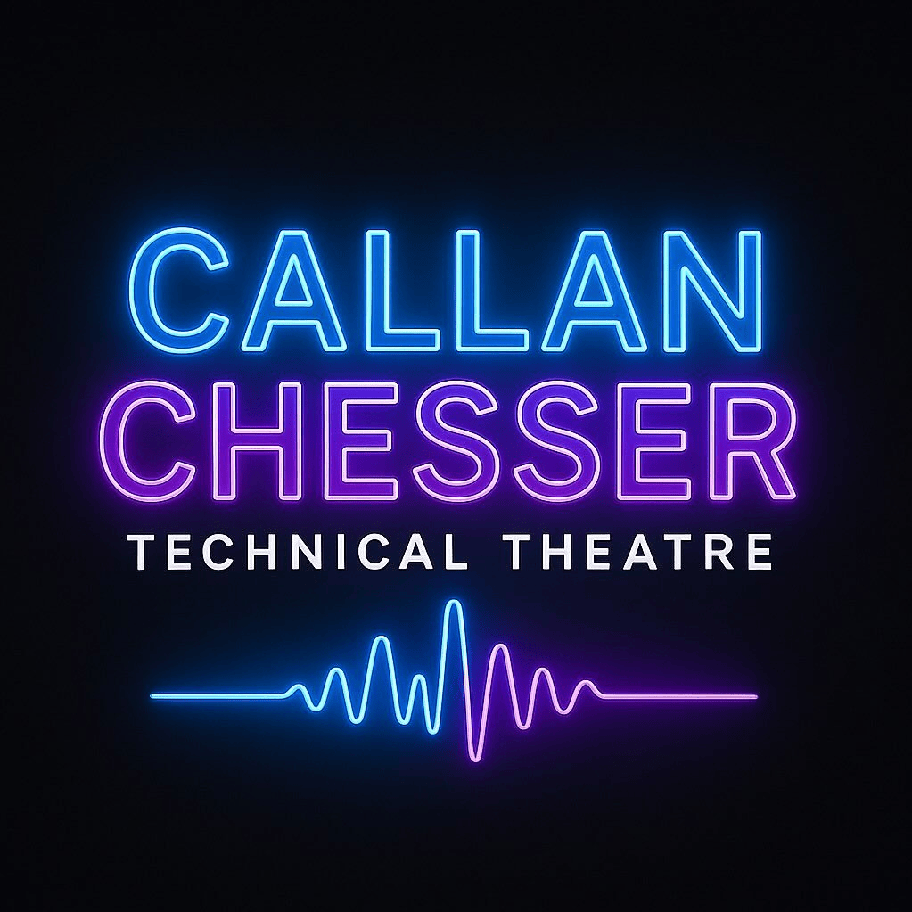

East Kilbride Village Theatre
Date: 15th to 21st of February 2026
Role: Video Operator
For Minerva JRs, "The Little Mermaid" I was incharge of the video & virtual backdrops provided by BroadwayMedia. The production had a full get in & out, tech & dress, as well as 6 shows. As well as just operating, I was in charge of making any changes and effects using QLab. At the start of the week we faced a lot of issues with StagePlayer so I also spent a while transfering it over to QLab. It was an amazing show, especially as it was my first show in a propper theatre.